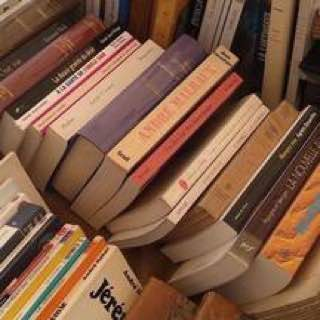

People's hobbies vary according to their preferences, temperaments, and circumstances. As a result, the variety of hobbies is quite broad. Some of the interesting hobbies include gardening, photography, stamp collecting, mountain climbing, rowing, and boating. Long walks and playing musical instruments are both beneficial hobbies. Reading is a very instructive and enjoyable hobby in my opinion. When I have free time, I read books, journals, and magazines. This hobby broadens my sympathies, broadens my knowledge, and sharpens my intellect.
I developed the habit of reading books as a child. Back then, I read a lot of small story books. But as I grew older, my tastes evolved, and I now prefer to read books and articles that provide me with additional information and knowledge. Reading is not only a wonderful hobby, but it also allows us to learn so much more than we could ever imagine. A reader is aware of almost all facts and events that occur around them. They would be well-versed in facts and figures that would benefit them in the long run.

Reading not only aids in knowledge acquisition, but also in language improvement. When compared to my friends who do not have the habit of reading, I was able to improve my language and vocabulary because I began reading at a young age. With each new level of reading, I could improve myself, and as a result, I can now stand confidently anywhere, because my language has given me an advantage over my peers. Reading enabled me to master not only language but also spelling, grammar, punctuation, and everything else associated with the English language.
Though all hobbies have advantages and disadvantages in their own right, reading has more advantages than disadvantages. Personally, I believe that all of us should cultivate the habit of reading because there is no better way to stay aware and avoid being duped when you have the knowledge of what you need to know. Reading is a wonderful hobby that I am proud to have, and I am completely smitten with it.